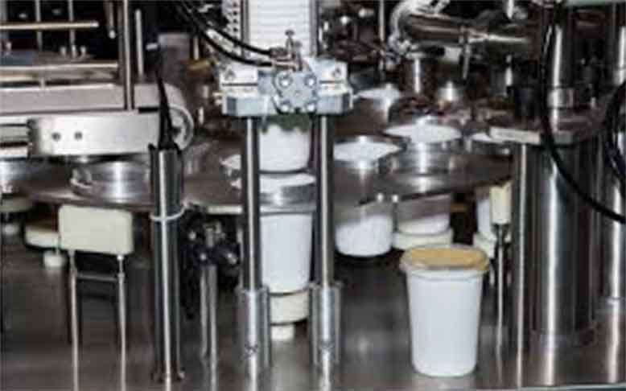
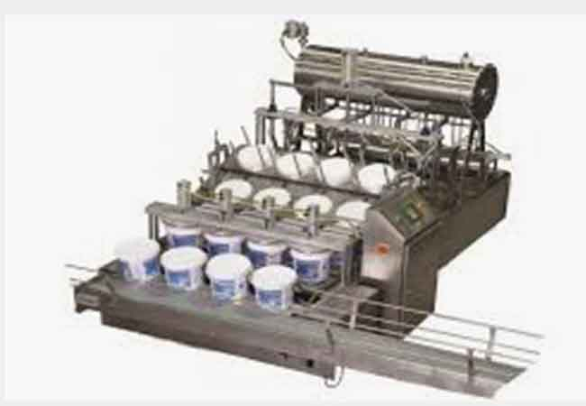
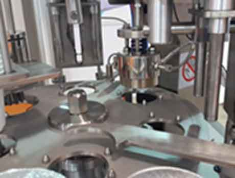

Quadruple Cup Filling Machine
Koru Machine
The fully automatic ayran filling machine is an industrial filling system designed to quickly and hygienically fill ayran into bottles, glasses, or other packaging.
It is used primarily in dairy factories, beverage manufacturers, and ayran production workshops.
It automatically performs product feeding, filling, capping, and labeling processes on a single line.
KORU QUADRUPLE ROTARY CUP FILLING MACHINE WORKING PRINCIPLE
TABLE Our machine is connected to a motor and reducer, driven by a mechanical transmission, and rotates the rotating table located on top. The sockets on the rotating table are designed to fit a single type of glass.
DROP The glasses are automatically dropped in groups of four. Vacuum at the bottom separates the glasses and ensures they fit into the holder.
VOLUMETRIC NOZZLE FILLING: When the photocell detects the glass, the filler fills the desired volumetric product into the glass in four pieces at a time (suitable for filling ayran and fermented milk).
LID PLACING The aluminum lids, arranged in groups of four in the holder, are automatically picked up by vacuum and placed on the glasses.
LID RELEASE SYSTEM A custom design will be made based on the sample, consisting of two lid release devices driven by a single piston. The lid suction cups conform to the lid shape, and if they deform over time, they can be easily removed from their screws and replaced.
CONTROL SENSOR The bowls with the lids placed pass under the lid control indicator sensor and arrive at the gluing station.
GLUE The lids are adhered to the aluminum foil at the desired temperature. The temperature is adjusted via the digital display (TEMP CONTROL DEVICE) on the panel. Magnetic sensors on the adhesive piston prevent potential problems with the machine.
EXIT CONVEYOR Finished products are lifted onto the conveyor by a lifting piston and a pusher arm, aligning the belt. The bowls will be manually collected from the belt by your designated personnel. The conveyor belt system is aligned with the holding brackets. The conveyor belt will be designed as a PU belt system, and non-slip wicks located under the belt will prevent rapid wear, extend the conveyor's life, and ensure longer use.
ASSEMBLY AND INSTALLATION
The assembly and installation of the machine will be carried out by the seller. However, it is the buyer's responsibility to bring the machine to the installation site.
All technical needs and requirements for the assembly and installation of the machine will be met by the buyer. Air and electrical connections, as well as all necessary infrastructure work and procedures to make the machine(s) operational, will be prepared by the buyer in accordance with standards. Any problems arising from deficiencies or errors in these infrastructure procedures will not be covered by the warranty, and the buyer will be responsible for these.
After the assembly of all machinery and equipment is completed, the seller will test them, perform a trial production, and leave them operational. All raw materials and equipment for the trial production will be prepared by the buyer. If any problems occur during test and trial production, they will be corrected by the seller.
During assembly and installation, one employee designated by the buyer will receive hands-on training on operation, maintenance, and other matters.
The machine(s) will be delivered to the seller with an "Assembly-Training-Commissioning Report." After signing this report, the seller will not accept any claims that the machine did not perform in accordance with the sample and trial production.
The buyer is responsible for covering all accommodation and transportation expenses of the assembly and installation team. Transportation can only be provided by Turkish Airlines; if the buyer requests otherwise, the seller must obtain approval.
The seller's employees (minimum 1 person) will stay at the buyer's factory for 2 days for assembly. A service invoice will be issued if an additional day is requested. ASSEMBLY
AIR 6-8 BAR 1250 L/MIN. REQUIRED.
ELECTRICITY 380 V 3 KW/HOUR CONSUMPTION.Our prices do not include 20% VAT. VAT will be collected in cash at the invoice.
Our prices are in USD and will be invoiced in TL based on the Central Bank of the Republic of Turkey (CBRT) exchange rate on the invoice date.
The first 50% of the payment is due upon order confirmation, and the remaining 50% is due before delivery.
WARRANTY Problems detected as a result of system installation will be corrected under our 1-year warranty. In cases where the system becomes unusable due to improper use, or in similar cases, an additional service fee will be charged for the reinstallation and operation of the system or for additions to the system. The training personnel selected by your company will be responsible only for the operation and maintenance of the products and tasks covered by our offer.
DELIVERY TIME 45-60 WORKING DAYS. The delivery period will begin after we receive the samples. If the buyer is required to submit samples before production can begin, these samples will be delivered to the seller within 5 days of the delivery of this contract. The seller will not be held responsible in any way for any delays or failure to commence production due to non-delivery of the samples. Any delays will be added to the manufacturing-delivery time.
OUTPUT CONVEYOR TRANSPORTATION: The machines are transported from our ATÖLYE ERENLER site, and the buyer is responsible for transportation and insurance.
SPECIFICATIONS
The filling and closing sections of the machine are enclosed with Plexiglas for safety.
The filling group is designed from 304-grade stainless steel.
Electrical materials: LEUZE, İNOVANCE, and MOLVEX.
Sensors: LEUZE
Driver: İNOVANCE
Machine and on-board motors: YILMAZ REDUKTOR, ELK MOTOR
PLC Control: PLC main control system: İNOVANCE
DISPLAY: Color touchscreen: İNOVANCE
Terminal: MOLVEX
Relay: MOLVEX
Pressure control and vacuum device: EXPFLEX, SDPC
Machine chassis and conveyor parts: AISI 304 quality stainless steel
AIR 6-8 BAR 1250 L/MIN. REQUIRED.
ELECTRICITY 380 V 3 KW/HOUR CONSUMPTION.Our prices do not include 20% VAT. VAT will be collected in cash at the invoice.
Our prices are in USD and will be invoiced in TL based on the Central Bank of the Republic of Turkey (CBRT) exchange rate on the invoice date.
The first 50% of the payment is due upon order confirmation, and the remaining 50% is due before delivery.
WARRANTY Problems detected as a result of system installation will be corrected under our 1-year warranty. In cases where the system becomes unusable due to improper use, or in similar cases, an additional service fee will be charged for the reinstallation and operation of the system or for additions to the system. The training personnel selected by your company will be responsible only for the operation and maintenance of the products and tasks covered by our offer.
DELIVERY TIME 45-60 BUSINESS DAYS. The delivery period will begin after we receive the samples. If the buyer is required to submit samples before production can begin, these samples will be delivered to the seller within 5 days of the delivery of this contract. The seller will not be responsible in any way for any delays or failure to commence production of the machine due to non-delivery of the samples. The delayed time will be added to the manufacturing-delivery time.
OUTPUT CONVEYOR TRANSPORTATION: The machines are transported from our ATÖLYE ERENLER site. The transportation and insurance of the machines are the responsibility of the buyer.
01 KORU SINGLE CABIN Ø75 CUP FILLING AND SEALING MACHINE, CAPACITY: 1250 UNITS / HOUR, 1 Unit
02 KORU SINGLE CABIN Ø95 CUP FILLING AND SEALING MACHINE, CAPACITY: 1250 UNITS / HOUR, 1 Unit